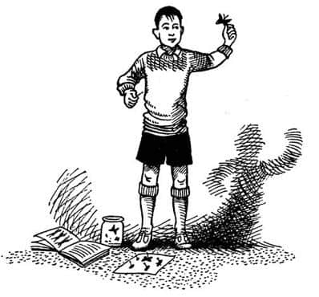
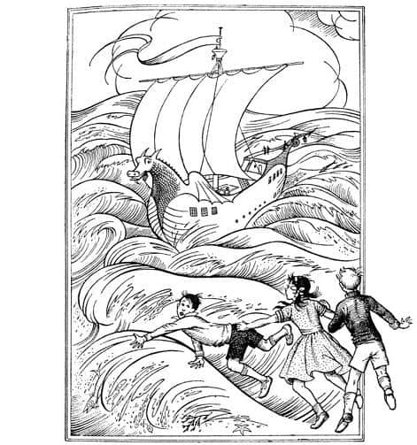
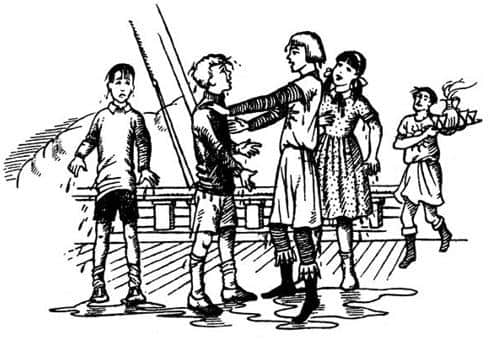
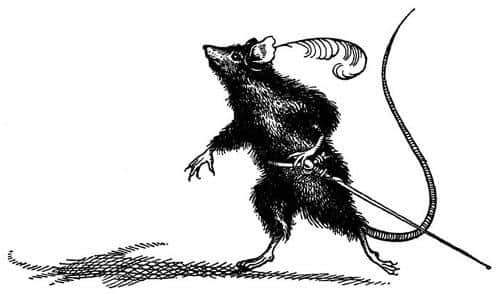
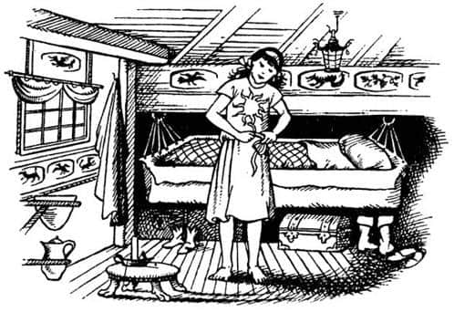
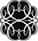

Yatak Odasındaki Resim
Eustace Clarence Scrubb adında bir çocuk vardı ve bu ismi hak etmediği de söylenemezdi hani. Annesiyle babası onu Eustace Clarence, öğretmenleriyse Scrubb diye çağırırdı. Arkadaşlarının onu nasıl çağırdıklarını söyleyemem, çünkü hiç arkadaşı yoktu. Ebeveynlerine “Anne” ve “Baba” demezdi, onları isimleriyle, yani Alberta ve Harold diye çağırırdı. Çok çağdaş, ilerici insanlardı. Et yemez, sigara ve alkol kullanmaz ve özel bir tür iç çamaşırı giyerlerdi. Evlerine çok az mobilya koymuşlardı, sahip oldukları birkaç giysi yataklarının üstünde dururdu ve pencereleri daima açıktı.
Eustace Clarence hayvanları severdi, özellikle de kartona iğnelenmiş ölü böcekleri. Kitapları da severdi; ama eğer içlerinde tahılları taşımaya yarayan, kovalardan oluşan asansör benzeri aygıtın ya da başka ülkelerdeki şişko çocukların özel okullarda egzersiz yaparken çekilmiş resimleri varsa.

Eustace Clarence, kuzenleri olan dört Pevensie’den, yani Peter, Susan, Edmund ve Lucy’den hoşlanmazdı. Ancak Edmund ve Lucy’nin onlara kalmaya geleceğini duyduğunda çok sevinmişti. Kalbinin derinliklerinde patronluk ve kabadayılık etme duyguları besliyordu; bir kavgada, bırakın Edmund’u, Lucy’yle bile başa çıkamayacak kadar çelimsizdi. Ufak tefek olmasına rağmen, eğer kendi evindeyse ve diğerleri de sadece misafirse, onlara kötü vakit geçirtmenin düzinelerce yolunu bulabilirdi.
Aslına bakılırsa Edmund ve Lucy, Harold Enişte ve Alberta Hala’nın yanında kalmayı istemiyordu. Ne var ki ellerinden bir şey gelmiyordu, çünkü o yaz babaları ders vermek üzere Amerika’da dört aylık bir iş bulmuştu ve anneleri de on yıldır gerçek bir tatile çıkmadığı için onunla beraber gidecekti. Peter çok sıkı bir şekilde bir sınava hazırlanıyordu ve tatilini Profesör Kirke’le ders çalışarak geçirecekti. Profesör Kirke’ün büyük evinde uzun yıllar önce harika maceralar yaşamışlardı ve eğer Profesör hâlâ o evde yaşıyor olsaydı çocukların dördünü de seve seve konuk ederdi. Ama artık küçük bir kulübede yaşıyordu, çünkü şimdi çok fakirdi ve bu kulübede konuklarına ancak küçücük bir yatak odası verebiliyordu. Diğer üç çocuğu Amerika’ya götürmek çok masraflı olacağından sadece Susan anne ve babasıyla gitmişti.
Yetişkinler, ailenin en sevimlisinin Susan olduğunu düşünüyordu. Susan yaşına göre çok akıllı olmasına rağmen derslerinde pek başarılı değildi ve annesi “Amerika yolculuğundan, diğerlerinin öğreneceğinden çok daha fazlasını öğrenir” demişti. Edmund ve Lucy, Susan’ı kıskanmamaya çalışmışlardı, ama yaz tatillerini halalarının yanında geçirmek zorunda olmaları onları dehşete düşürüyordu. “Benim durumum daha da vahim” dedi Edmund, “en azından senin bir odan olacak, ama ben o haylaz Eustace ile aynı odayı paylaşmak zorunda kalacağım.”
Bir öğleden sonra, Edmund ve Lucy birkaç dakika yalnız kaldığında hikâyemiz de başladı. Çocuklar kuşkusuz, ismi Narnia olan özel ve gizli ülkelerinden bahsediyorlardı. Sanırım birçoğumuzun gizli bir ülkesi vardır, ama çoğumuz için bu, hayali bir ülkedir. Edmund ve Lucy bu konuda diğer insanlardan daha şanslıydı. Onların gizli ülkeleri gerçekti. Gerçekten orada iki kez bulunmuşlardı ve bu bir oyun ya da rüya değildi. Narnia’ya büyü sayesinde gitmişlerdi, çünkü oraya gitmenin tek yolu buydu. Narnia’dan ayrılırlarken, bir gün oraya geri döneceklerine dair bir imada bulunulmuş, neredeyse bir söz verilmişti. Bu konu hakkında ne kadar çok konuştuklarını tahmin edebilirsiniz.
Lucy’nin odasındaki yatağın kenarına oturmuşlar, karşı duvardaki bir resme bakıyorlardı. Evde hoşlarına giden tek resim oydu. Alberta Hala bu resmi hiç sevmiyordu (sırf bu yüzden resim üst kattaki küçük odaya konmuştu), ama onu bir türlü atamamıştı, çünkü kalbini kırmak istemediği birinin düğün hediyesiydi.
Bir gemi resmiydi bu – dosdoğru size doğru gelen bir geminin resmi. Pruvası yaldızlıydı ve ağzını sonuna kadar açmış bir ejderha başı şeklindeydi. Tek direği ve mor renkli, büyük, kare şeklinde bir yelkeni vardı. Geminin bordası – ejderhanın yaldızlı kanatlarının sona erdiği yerden sonra görülebilen kısmı – yeşildi. Az önce harika, masmavi bir dalganın üzerine çıkmıştı ve dalga köpüklerle size doğru ilerlemekteydi. Geminin hafifçe iskele tarafına yattığı ve ılık bir rüzgârın önünde hızla yol aldığı açıkça görülüyordu. (Bu arada, bu hikâyeyi okumakta kararlıysanız ve gemiler hakkında pek bilgili değilseniz, geminin baş tarafına doğru baktığınızda, sol yanının iskele, sağ yanının da sancak tarafı olduğunu kafanıza sokmalısınız.) Günışığı iskele tarafından vuruyordu gemiye ve o taraftaki sular yeşillikler ve morluklarla doluydu. Diğer taraf ise geminin gölgesinden dolayı koyu maviydi.
“Üzücü olan” dedi Edmund, “Narnia’ya gidemeyeceğini bildiğin halde bir Narnia gemisine bakmak.”
“Olsun, bakmak bile güzel” dedi Lucy. “Üstelik o tam bir Narnia gemisi.”
Kapının dışında onları dinlemekte olan Eustace Clarence sırıtarak odaya girdi ve “Hâlâ eski oyunları mı oynuyorsunuz?” diye sordu. Geçen sene onların evinde kalırken, çocukların Narnia’dan bahsettiklerini duymuştu ve bu konuda onlarla dalga geçmeye bayılırdı. Anlattıkları her şeyin uydurma olduğunu sanıyordu ve kendisi bir şeyler uyduramayacak kadar aptal olduğundan olup biteni bir türlü anlayamıyordu.
“Burada istenmeyen birisin” dedi Edmund tersçe.
“Bir dörtlük bulmaya çalışıyorum” dedi Eustace. “Şöyle bir şey:
Narnia hakkında oyunlar oynayan küçük çocuklar
Yavaş yavaş kaçıklaştıkça kaçıklaştılar.”
“Öncelikle, çocuklar ve kaçıklaştılar kafiye değil” dedi Lucy.
“Ama redif” dedi Eustace.
“Redif medif ne diye sakın sorma ona” dedi Edmund. “Sorman için yanıp tutuşuyor. Hiçbir şey söylemezsen çekip gider belki.”
Birçok çocuk bu tepki karşısında ya odayı terk eder ya da öfkelenirdi. Eustace her ikisini de yapmadı. Sadece sırıtarak odada gezindi ve az sonra tekrar konuşmaya başladı.
“Bu resimden hoşlanıyor musunuz?” diye sordu.
“Tanrı aşkına onun sanat hakkında konuşmaya başlamasına izin verme” dedi Edmund aceleyle. Ancak dürüst bir çocuk olan Lucy, “Evet. Çok hoşlanıyorum” demişti bile.
“Saçma sapan bir resim” dedi Eustace.
“Dışarıya çıkarsan ona bakma külfetinden kurtulursun” dedi Edmund.
Eustace, Lucy’ye, “Bu resimden neden hoşlanıyorsun?” diye sordu.
“Eee, ilk önce” dedi Lucy, “gemi gerçekten gidiyormuş gibi göründüğü için seviyorum. Ayrıca su gerçekten ıslatacakmış gibi görünüyor ve dalgalar da, gerçekten aşağı yukarı hareket ediyormuş gibi.”
Kuşkusuz Eustace’in buna verecek birçok cevabı vardı, ama hiçbir şey söylemedi. Bunun nedeni, o anda dalgalara bakması ve dalgaların, sanki gerçekten aşağı yukarı hareket ediyormuş gibi görünmesiydi. Sadece bir kez gemiye binmişti ve fena halde deniz tutmuştu. Resimdeki dalgaların görünümü yine kendini kötü hissetmesine sebep olmuştu. Yüzü yemyeşildi, ama resme bir kez daha bakmak istiyordu. Sonra hep birlikte büyülenmiş gibi resme bakmaya başladılar.
Gördükleri şeyi, kitapta yazılmış bir halde okuduğunuzda, inanmakta zorlanabilirsiniz, ama tüm bunlar yaşanırken, görünene inanmak da en az okunana inanmak kadar zordu. Resimdeki her şey hareket ediyordu. Bir film gibi de görünmüyordu; renkler çok berrak, gerçek ve doğaldı. Geminin pruvası dalgaların içine daldı ve havaya büyük bir su serpintisi fışkırdı. Sonra dalgalar geminin arkasında yükseldi ve ilk kez geminin kıçı ve güvertesi görüldü. Ancak, bir sonraki dalga gelip de geminin başını kaldırdığında kıç ve güverte tekrar gözden kayboldu. Aynı anda, Edmund’un yanında bulunan ders kitabının sayfaları dağıldı, sonra kitap havalanarak Edmund’un arkasındaki duvara doğru uçtu, Lucy rüzgârlı bir günde olduğu gibi, bütün saçlarının yüzünün etrafında uçuştuğunu hissediyordu. Evet rüzgârlı bir gündü, ama rüzgâr resmin içinden onlara doğru esmekteydi. Aniden rüzgârla birlikte başka sesler de gelmeye başladı – dalgaların hışırtısı, suyun geminin bordasına çarpışı, gıcırtılar ve havayla suyun, diğer tüm sesleri bastıran yüksek ve düzenli sesi. Lucy’yi rüya görmediğine ikna eden tek şey kokuydu, o harika deniz kokusu.
“Yapmayın” diye bağırdı Eustace, korkuyla karışık hırıltılı bir sesle. “İkinizin oynadığı gülünç bir oyun bu. Yapmayın. Alberta’ya söyleyeceğim. Of!”
Diğer ikisi maceralara çok daha fazla alışkındılar, ama tıpkı Eustace’in, “Of” dediği gibi onlar da, “Of” diye bağırdılar. Bunun nedeni, soğuk ve tuzlu bir dalganın, resmin çerçevesinden fırlayıp onları iliklerine kadar ıslatması ve dalganın çarpışıyla nefessiz kalmalarıydı.

“Bu saçma sapan şeyi parçalayacağım” diye bağırdı Eustace ve birden garip şeyler olmaya başladı. Eustace resme doğru koştu. Büyü hakkında bir şeyler bilen Edmund, Eustace’in arkasından koşup aptallık etmemesini ve dikkatli olmasını söyledi. Lucy, Edmund’a tutundu ve onunla birlikte sürüklendi. Şimdi ya kendileri küçülmüşler ya da resim büyümüştü. Eustace duvardan resmi indirmek için sıçradı ve kendisini çerçevenin kenarında ayakta dururken buldu; önünde cam değil gerçek bir deniz vardı, rüzgâr ve dalgalar sanki bir kayalığa çarpar gibi çerçeveye çarpıyordu. Kafası karışmıştı ve havaya sıçramış olan diğer ikisinin kollarına yapıştı. Bir saniye kadar süren itişip kakışma ve bağırıştan sonra büyük, mavi bir dalga önlerinde yükseldi ve çocukların ayaklarını yerden kesip hepsini denize sürükledi. Eustace’in umutsuz bağırışı, ağzına kaçan sularla aniden sona ermişti.
Lucy, geçen yaz yüzmeyi öğrenmek için çok çalıştığına şükrediyordu şimdi. Daha yavaş kulaç atsaydı çok daha iyi edeceği doğruydu; su resimde göründüğünden çok daha soğuktu. Elbiseleriyle denize düşen herkesin yapması gerektiği gibi başını suyun üstünde tuttu ve ayaklarının yardımıyla ayakkabılarını çıkardı. Hatta ağzını kapatıp gözlerini açık tuttu. Geminin çok yakınındaydılar; Lucy yeşil renkli bordanın başlarının üzerinde bir kule gibi yükseldiğini ve insanların güverteden onlara bakmakta olduğunu gördü. Sonra, tahmin edebileceğiniz gibi Eustace panik içinde ona tutundu ve ikisi birden dibe doğru inmeye başladılar.
Tekrar su yüzüne çıktıklarında, Lucy beyazlı birinin geminin yanından suya atladığını gördü. Edmund, Lucy’nin yanına yaklaşmış, bir yandan dalgalarla boğuşuyor, bir yandan da ulur gibi bağıran Eustace’i kollarından yakalamaya çalışıyordu. Sonra, yüzü pek yabancı olmayan biri, Lucy’yi yakaladı. Gemiden bağırışlar duyuluyor, küpeştenin üzerinde bir sürü baş görünüyor, halatlar fırlatılıyordu. Edmund ve bu yabancı, Lucy’nin vücuduna ip bağladı. Bu arada uzunca bir süre geçti ve Lucy’nin yüzü mosmor olup dişleri takırdamaya başladı. Aslında çok da uzun bir süre değildi; Lucy’ye zarar vermeden ve geminin bordasına çarptırmadan güverteye alabilecekleri anı bekliyorlardı. Sonunda, sırılsıklam olan ve dişleri takırdayan Lucy’yi güverteye çıkardıklarında, o kadar dikkate rağmen yine de dizlerinden birinin morarmış olduğunu gördüler. Lucy’den sonra, Edmund güverteye çekildi. Daha sonra da halinden hiç memnun olmayan Eustace. En sonunda da yabancı çıktı – Lucy’den biraz daha büyük, altın saçlı bir çocuktu.
“Ca – Ca – Caspian!” dedi Lucy nefes nefese. Çünkü bu, bir önceki ziyaretleri sırasında tahta geçmesine yardım ettikleri, Narnia’nın çocuk kralı Caspian’dı. Edmund da Caspian’ı hemen tanımıştı. Üçü de büyük bir coşkuyla el sıkışıp birbirlerinin sırtlarını sıvazladılar.
Caspian Eustace’i gösterip, o şirin gülümsemesiyle, “Peki ama arkadaşınız kim?” dedi. Ne var ki Eustace, sanki başına ıslanmaktan çok daha kötü bir şey gelmiş gibi, bir çocuğun ağlaması gerektiğinden çok daha fazla ağlıyordu ve sadece, “Bırakın gideyim. Bırakın da evime döneyim. Bundan hoşlanmıyorum” diye bağırıyordu.
“Gidebilirsin” dedi Caspian. “Ama nereye?”
Eustace küpeşteye koştu, çerçevenin yerinde durduğunu ve belki de Lucy’nin odasına bir göz atabileceğini umuyordu. Gördüğü şey, yer yer köpüklü mavi dalgalar ve dalgalardan daha açık mavi olan gökyüzüydü; her ikisi de, aralıksız, ufka kadar uzanıyordu. Umutsuzluğa düşmesini mazur görmek gerekir, çünkü deniz tutmuştu ve bunda bir suçu yoktu.

“Hey! Rynelf, Majestelerine baharatlı şarap getir” dedi Caspian, gemicilerden birine. “Bu deniz macerasından sonra içinizi ısıtacak bir şeylere ihtiyacınız vardır.” Edmund ve Lucy’ye majesteleri demişti, çünkü onlar Peter ile Susan’la beraber, onun zamanından çok uzun süre önce Narnia’nın kral ve kraliçeleriydiler. Narnia’da zaman, bizimkinden değişik akar. Orada yüz yıl geçirseniz bile, bizim dünyamıza, onu terk ettiğiniz günün aynı saatinde geri dönersiniz. Burada bir hafta geçirdikten sonra Narnia’ya geri dönseniz, bin Narnia yılının ya da sadece bir günün geçmiş olduğunu veya zamanın hiç geçmediğini görebilirsiniz. Oraya varana kadar asla zaman hakkında bir tahminde bulunamazsınız. Dolayısıyla, Pevensie Kardeşler’in geçen sefer Narnia’ya ikinci dönüşleri, (Narnialılar için) sanki Kral Arthur’un Britanya’ya geri dönmesi gibi bir şeydi. Kimileri onun bir gün gerçekten geri döneceğini söylüyor. Bence ne kadar erken dönse o kadar iyi olur. Rynelf, içinde buharı tüten baharatlı şarabın bulunduğu bir sürahi ve dört gümüş bardakla geri geldi. Bu, tam da istedikleri şeydi; Lucy ve Edmund şarabı yudumladıkça sıcaklığının içlerine yayıldığını hissediyorlardı. Eustace suratını buruşturdu, bir şeyler söylemeye çalıştıktan sonra şarabı tükürdü ve tekrar midesi bulanmaya başladı. Ağlamaya başlayıp Erikağacı marka vitamin eklenmiş, yürek merhemi çorbalardan olup olmadığını, eğer varsa bu çorbayı damıtılmış suyla yapıp yapamayacaklarını sordu ve bir sonraki iskelede karaya çıkarılmasında ısrar etti.
“Mutlu bir gemici getirmişsin bize, kardeşim” diye kıkırdayarak fısıldadı Caspian Edmund’un kulağına. Eustace tekrar bağırmaya başladı.
“Ah! İğrenç! Bu da ne? Uzaklaştırın şu korkunç şeyi yanımdan.”
Bu kez Eustace’in şaşkınlığa düşmesinin gerçek bir nedeni vardı. Kıçtaki kamaradan ilginç bir şey çıkmış, yavaşça onlara doğru yaklaşıyordu. Buna bir fare denilebilirdi – ve doğrusunu isterseniz, bir fareydi de. Arka ayakları üzerinde yürüyen altmış santimetre boyunda bir fareydi. İnce bir altın şerit, farenin bir kulağının altından, diğerininse üstünden geçerek başının etrafında dolanıyordu ve ucuna da kırmızı bir tüy iliştirilmişti. (Farenin tüyleri koyu renkli, hatta neredeyse siyah olduğundan, çok çarpıcı bir görünüme sahipti.) Sol pençesiyle, neredeyse kuyruğu kadar uzun bir kılıcın kabzasını tutuyordu. Sallanan güvertede ciddiyet içinde yürürken, dengesi mükemmel ve tavırları soyluydu. Lucy ve Edmund hemen tanımışlardı onu; Narnia’daki konuşan hayvanların en cesuru ve farelerin lideri Bastıbacak’tı bu. II. Beruna Savaşı’nda şanlı bir zafer kazanmıştı. Lucy, her zamanki gibi, Bastıbacak’ı kollarına alıp kucaklamayı arzuluyordu. Fakat bu, Lucy’nin de çok iyi bildiği gibi hiçbir zaman tadına varamayacağı bir zevkti: Çünkü böyle bir davranış Bastıbacak’ı çok gücendirirdi. Onun yerine, fareyle konuşmak için diz çöktü.
Bastıbacak sol ayağını ileri atıp, sağ ayağını geri çekerek bir reverans yaptıktan sonra Lucy’nin elini öpüp doğruldu, bıyıklarını burdu ve tiz sesiyle:

“Tüm alçakgönüllülüğümle Majestelerinin emrindeyim. Ve Kral Edmund’un.” (Burada yine reverans yapmıştı.) “Bu yüce harekâtta tek eksiğimiz siz Majesteleriydi.”
“Uf, uzaklaştırın şunu” diye feryat etti Eustace. “Farelerden nefret ederim. Ayrıca sirk hayvanlarına da asla dayanamam. Gülünç, kaba ve duygusal olurlar.”
Bastıbacak Eustace’e uzun uzun baktıktan sonra Lucy’ye, “Şuradaki saygısız Majestelerinin koruması altında mı? Eğer değilse—”
İşte tam o sırada Lucy ve Edmund aynı anda hapşırdı.
“Sizi burada böylesine ıslak bir halde ayakta tuttuğum için ne kadar aptalım” dedi Caspian. “Aşağıya gelin ve elbiselerinizi değiştirin. Sana kendi kamaramı vereceğim Lucy, ama korkarım gemide hiç bayan elbisesi yok. Benimkilerle idare etmek zorunda kalacaksın. Bir iyilik yap ve yolu göster Bastıbacak.”
“Konu bir bayanın rahatlığıysa” dedi Bastıbacak, “bir onur meselesi de olsa – en azından bir süreliğine – bekleyebilir” diye ekledi. Bunları söylerken Eustace’e bakıyordu. Caspian acele etmelerini söyledi ve birkaç dakika içinde Lucy kendisini kıç kamarasının kapısından içeriye girerken buldu. Kamarayı görür görmez sevmişti – geminin ardında bıraktığı mavi sulara bakan üç kare lomboz, masanın üç yanındaki alçak, minderli sıralar, tavanda sallanan gümüş lamba (mükemmel işçiliğinden, cücelerin işi olduğunu hemen anlamıştı) ve ileride duran bölmedeki kapının üzerinde Aslan’ın altın levhaya işlenmiş bir resmi vardı. Bütün bunları göz açıp kapayıncaya kadar görmüştü, çünkü Caspian hemen sancak tarafındaki bir kapıyı açıp, “Bu oda senin, Lucy. Ben sadece birkaç şey alacağım” – derken dolaplardan birini karıştırıyordu – “ve rahatça giyinebilmen için seni yalnız bırakacağım. Islak elbiselerini kapının dışına bırakırsan, kurumaları için mutfağa göndertirim.”

Lucy sanki haftalardır Caspian’ın kamarasındaymış gibiydi ve evinde gibi rahat hissediyordu kendini. Geminin sallantısına aldırmıyordu, çünkü Narnia’da kraliçe olduğu eski günlerde epeyce gemi yolculuğu yapmıştı. Kamara çok küçüktü, ama tertemizdi. Duvarlarına asılı çeşitli tablolar (üzerlerinde kuş, hayvan, kızıl ejderha ve sarmaşık resimleri vardı) ona rengarenk bir görünüm kazandırmıştı. Caspian’ın elbiseleri ona büyük gelmişti ama idare ederdi. Ayakkabılar, sandaletler ve deniz çizmeleri, giyemeyeceği kadar büyüktü, ama zaten geminin güvertesinde yalınayak dolaşmaktan rahatsızlık duymazdı. Giyinmeyi bitirdiğinde penceresinden dışarıya, akıp giden sulara baktı, uzun ve derin bir nefes aldı. Harika zaman geçireceklerine emindi.
